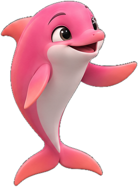

Before investing in automation, find out
where to start

preview without recorded video
Tap to watch with sound
🔊 Sound on
↺ Restart
Your data is only used to send your result and for the team to contact you. No spam.